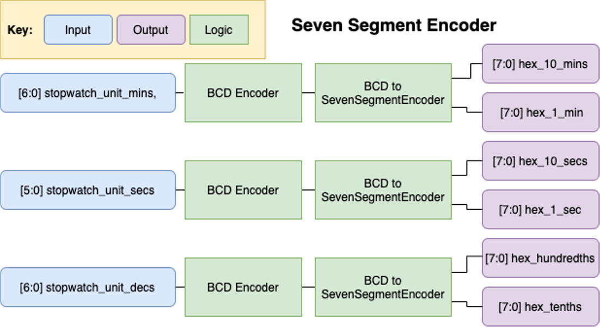
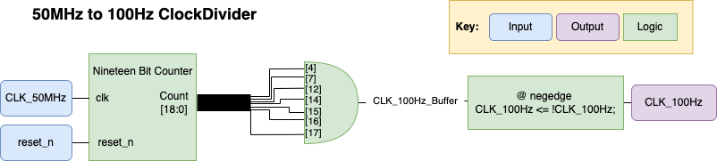
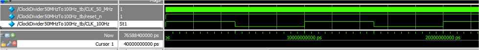
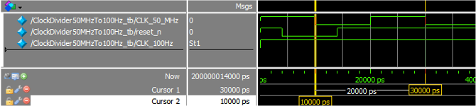
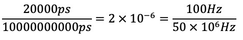
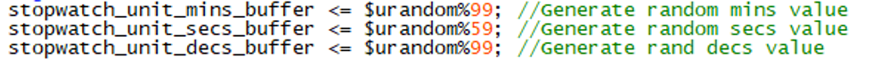
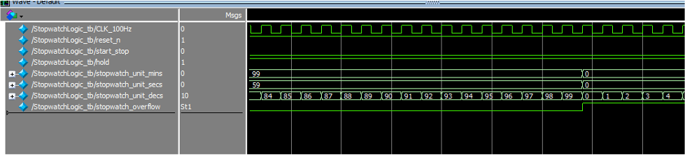

Verilog Stop Watch Project
|
Name: |
Language/Tools Used: |
Timeframe |
|
Stop Watch |
Verilog DE10-Lite |
25th March - 05th May 2021 (~6 Weeks) |
This project was the final assessment in one of my second year modules: ELEC 2665 Microprocessors and Programmable Logic, for this I got 100%. I've included below the report I wrote for the assessment below as I feel it demonstrates well how this project came together.
1. In your own words, explain the overall project brief and its main aim and objectives:
The aim of this project is to implement a stopwatch in Verilog, using what we have learnt over the course of Unit 3 and 4 of this module. The main design is made up of four Sub Modules and one Main Module. One of these submodules the BCD Encoder is provided for us, the rest of them contain the port definitions but we have to fill the rest of the file out. This means that we have to write the logic for the other files. These are: “ClockDivider50MHzTo100Hz.v”, “StopwatchLogic.v”,” SevenSegEncoder.v” and the top level design file: “Stopwatch.v”. The main aim with this design is to provide a way for our understanding and work from this module to be assessed, by getting us to implement the logic for a device that uses what we have learnt but have never before directly implemented, means that the only real way that you are going to get anywhere with this design is if you understand what is going on. I have then implemented as much as possible of it using what we have learnt over the course of this module. Using logic to implement counters and keeping the use of behavioural logic to a minimum / using it when I can’t find another way to implement a certain feature. The main objectives of the project are to work on the Stopwatch design for a substantial amount of time until you get to a point where you can’t get any further. The brief states that not many of us will be able to complete the whole thing, and that more marks are allocated for the report write up then the design for that exact reason.
2. Give an overview of two simple digital logic circuits that featured in your design (e.g. multiplexer):
The main digital logic circuit I have used within my design are counters, I have made a few separate circuits that have different length counters within them. These designs are all relatively similar but the idea behind them is that the counter is made up of D-type Flip Flops and every time the circuit receives a positive input it will increment the counter. Then once you reach the maximum value, the counter will trigger an overflow bit, reset and start counting again. By tailoring the counters to stop at set decimal values such as 59 and 99 I was able to use these counters to create the bulk of the logic that runs the stopwatch. I haven’t used many other digital logic circuits within my design as such, but I have used a number of AND gates. By using the AND gates you can use them as a latch, such as within the start stop part of the stopwatch logic module. By passing a latching signal to one leg and the clock to the other when the button a pressed, within the Verilog the signal latches on and thus allows the clock to pass into the counters.
3. Outline the planning undertaken for the Seven Segment Encoder module:
So I started this section off by reading through the module specification and ensuring that I fully understood the desired purpose of this module. From here I looked through all the modules I have made previously to see if there was anything I could reuse/ include here. We were given a BCD Encoder module and I have previously written a BCD to Seven Segment Encoder module. So with these two modules I am able to convert a binary number to a Seven Segment Output. From here I tried to make some notes and think about how everything would be connected, and I ended up deciding on the following setup:

After getting this sorted, I then started writing the Verilog for the module and eventually test benched it.
4. Detail and explain your proposed system architecture for the complete Stopwatch Logic module:
Within the Stopwatch Logic Module I have 3 counters, two of which are Seven bits and one is Six bits. Using these counters I can count the Hundredths of a second, Seconds and Minutes. Each of the counters as I mentioned earlier is designed to reset at a set value (i.e. 59 for the 6 bit and 99 for the 7 bit). When the counter reaches the maximum value it outputs an overflow bit. By chaining these counters together and using the overflow bit as the input clock for the next counter i.e. connect Hundredths to Seconds to Minutes, I’m able to create the logic that I want. The start stop reset and hold logic can then be added on top of this. The start stop logic was implemented as mentioned earlier using an AND gate, where the clock input is put on one leg and a latching enable bit is put on the other AND leg. By creating a latching variable within Verilog, I can then use the AND as a switch to turn the stopwatch on and off by blocking the input clock signal to stop the device and let the clock signal pass when the device is started. By extending the previous idea, and ANDing in the hold input directly, as it isn’t latching and is active low, whenever the output is 1 it will allow the Clock signal to still pass and when it is 0 it will block the Clock signal leading to the desired function. As I have instantiated the counters based on D type Flip Flops that have a reset_n pin, I didn’t need to add any further logic at this stage and just connected the reset_n pins of the Hundredths of a second, seconds and minutes counters instantiations reset pins to the Stopwatch Logic modules reset pin. Overflow is probably the trickiest part to implement, I planned on using some AND gate implementation to get this to work, similar to how I implemented the start stop logic. But no matter what I tried I couldn’t get it to work. So in the end I used an always block that has a sensitivity list of: posedge stopwatch_overflow_buffer or negedge reset_n. With this I created a latching value that would pass the buffer value to the output. By doing this the overflow bit should light up and stay on even once the counter overflows past 99,59,99 and rolls over to 00,00,00 the overflow bit light should stay on until the reset_n button is pressed, because the reset_n triggering the always is the only situation that the block will be triggered and the buffer value is 0 (i.e. resetting it). I’ve also included a diagram of the overall design:

5. Explain how your Verilog code implements the 50MHz to 100Hz frequency divider:

I spent some time trying to get this module to operate correctly, I started by implementing it with the standard binary counter and implementing it the way we had done in previous lab sessions. This involved using a 19bit counter and using the 19th bit as the CLK output, as this divides the signal by 219: 〖50×10〗^6/2^19 =95.36Hz→10.49ms period. Which isn’t exactly 10ms, so I had to refine the counter design. I finally settled on the design you can see in the above diagram, where all of the bits are output of the Binary Counter and by putting the bits into the AND gate it outputs a 1 every time the number: 19b0111101000010010000 is read =250000, so every time 250000 is read on the counter the CLK signal will flip. That is at a frequency of 200Hz, the reason I didn’t just divide directly down to the desired 100Hz, was because this AND gate will only output a spike at the specific output, the rest of the time when the output isn’t 250000 you have a 0 on the output. Hence, it’s not a CLK signal yet. But as this 200Hz signal will send a pulse twice every 500000s (100Hz) it can be used to flip the clock signal. Hence giving you the desired 100Hz output:


To confirm this logic works:

6. Outline your test procedures for the Seven Segment Encoder module:
For the Seven Segment Encoder module I used a random test schedule. I generated some random numbers within the limits of what would be displayed on the Seven Segment displays:

I then passed those numbers into the Seven Segment Encoder module and viewed the wave forms in Modelsim. I didn’t automate the checking part of this testbench, because I couldn’t come up with a Golden Model to check my Verilog against that didn’t implement the Conversion of Binary Coded Decimal to Seven Segment in a way that I hadn’t just used to implement the module already. So I decided that I would manually check some of the random values for the Seven Segment Module, and from what I could see I had implemented it correctly. I then had enough of the full stopwatch design in a working state that I could implement it on the DE10-Lite and check that each of the numbers displayed correctly. I found that each of the numbers was displayed inverted, so I just flipped the output bits within the Stopwatch Module and re-programmed the board. All of the numbers displayed correctly, so I was happy that the Seven Segment Encoder module was functioning correctly now. I realise now looking back on this testing that I could have made it much more efficient. By for example implementing some form of automated testing, but I struggled as I mentioned to come up with how I could do that without just repeating the same model I had used to write the actual module being tested
7. Propose a suitable constrained random test schedule for the Stopwatch Logic module:
Start by generating a series of ten random times. Then reset the stopwatch and press start, wait for half the first of the random set times, press hold for a short period and then let go, then press the stop start again once you reach the end time. Repeat this for the 9 other random times within the test procedure. When I make reference to pressing buttons it is to make the logic of the testing within the device more intuitive, I’m of course actually referring to simulating the device and setting each of the input lines high or low accordingly (and running this in Modelsim). If all of those tests functioned correctly, then I believe that would be enough to ensure that the Hundredths of a Second, Seconds, Minutes, the Start Stop and hold functionality were all working correctly. To ensure the overflow is functioning correctly, I would run the stopwatch from start to finish in a test bench (at a much faster rate than real life) several times, to ensure the overflow bit goes high after overflow has occurred. It is important to note here that the specification of the design didn’t state if the stopwatch should freeze at 99 59 99 and the overflow light come on or if it should overflow and automatically roll over to 00 00 00 again. I have designed mine to follow the latter, hence for my testing it would be important to ensure that if you left the stopwatch running for a very long time (e.g. days) the overflow light stayed on, no matter how many times it overflowed and only once you finally hit the reset button would it turn off. So in a constrained random test schedule after all those initial random tests for core functionality I think that the overflow functionality is one of those critical cases that needs to be checked. By following that procedure I think that would cover everything required to ensure the stopwatch is as functional as possible.
8. What are you most proud of in your design?:
I’m proud of the design as a whole, the fact that I manged to implement the core functionality of the stopwatch and my testing through testbenches has shown that it more or less meets all of the design criteria (see Part 10 for further clarification). The one specific thing I’m the most proud of is the Stopwatch Logic Module, I initially implemented that using Behavioural Verilog, but after some clarification on the difference between Behavioural and the Verilog we have covered this term, I worked on redoing this entire module. It took quite a while to get it to work but by using a similar approach as I did with the Frequency Divider Module, I was able to (after a lot of trial and error) get rid of most of the Behavioural Verilog. I have still had to use two always loops to get all the functionality but it is a massive improvement over what I had before that.
9. What part of the project gave you the most difficulty? How did you deal with this?
The Clock Divider Module was the most difficult to implement correctly, as I mentioned earlier, I had initially implemented it so that the time period of the output was not exactly 10ms. It took me a lot of trial and error and many hours of staring at a screen to get that to work. I tried to deal with the problems I faced by breaking the code down and implementing one small step at a time, test benching it and then moving on if that worked and if not then rewriting the code until it worked. There were a few times within this, that I just restarted whole sections as the idea I was following was flawed in one way or another. Eventually I settled on the AND gate implementation and got that to function correctly, giving the time period of exactly 10ms! The reason this breakthrough was so crucial is that it proved that this idea of using the counter to count to non-divisible by 2 intervals was possible for me to write. This made the conversion from behavioural Verilog in the Stopwatch Logic module I mentioned earlier possible!
10. If you were given two weeks extra to further develop the project, what extra modifications could you reasonably make within that timeframe?:
So I ran a number of testbenches to ensure my design was functioning correctly. They more or less showed that my design functioned correctly. One issue that I ran into was the following. When you reach overflow the overflow light should come on, and in my simulation it did (you can see the bit flip on the bottom signal):

I then ran the device in real life to confirm this result:
 |
 |
| Stopwatch just before Overflow Occurs |
Stopwatch Just after Overflow Occurs |
As you can see that in real life, the overflow LED doesn’t light up and the stopwatch doesn’t reset to 0 it resets to 080000 (the 8 in the Hundredths column is there because the video I took wasn’t a high enough frame rate to catch the 0). So if I had more time then I would trouble shoot this, I looked at basic things such as checking all the pin assignments and they were all correct as far as I could see. Along with that problem I found, I also think it might be worth adding testing to see what happens when multiple buttons are pressed at the same time, as you want to ensure you design is fool proof. I didn’t have the time to do this, but with an extra two weeks that would be plenty of time to design a testbench for this and ensure that the user of the device can’t access an undesired state.